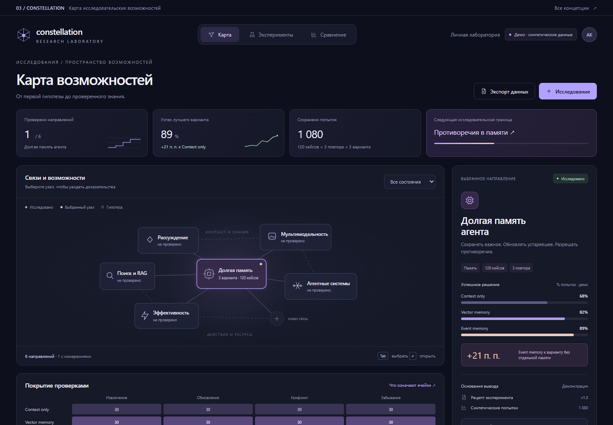
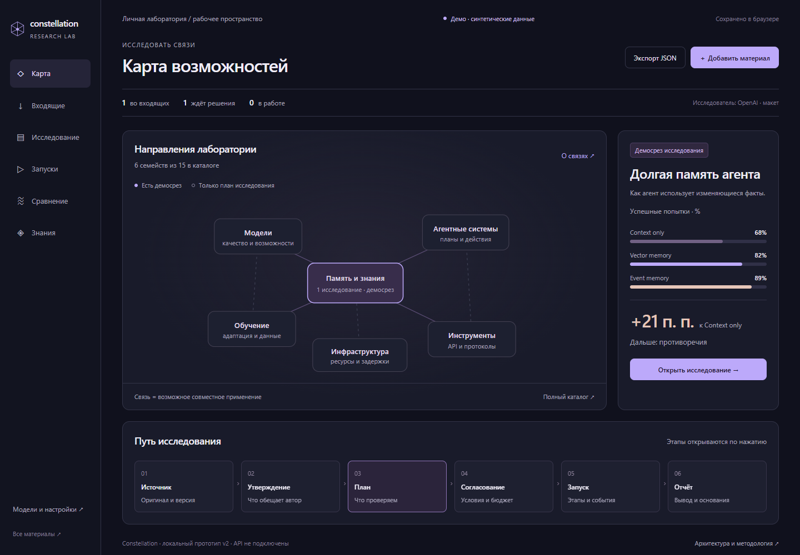

Конкретное исследование
Показатели относятся к выбранному объекту. Один проверенный сценарий не превращает всё направление в изученное.
Развитие выбранной концепции: от карты с одним примером к связному исследовательскому маршруту, где графика объясняет состояние, результат и следующий шаг.
Первая версия хорошо передавала характер лаборатории: тёмный фон, мягкие фиолетовые и персиковые акценты, карта и компактный инспектор. Однако три экрана показывали преимущественно готовый результат. Между новостью, утверждением автора, планом и измерением оставались разрывы. Общие показатели занимали место, не объясняя текущую работу.
Показатели относятся к выбранному объекту. Один проверенный сценарий не превращает всё направление в изученное.
На каждом этапе виден один главный шаг; подробные настройки раскрываются рядом с ним.
График ведёт к попытке и источнику. Отсутствие измерения отличается от нулевого результата.
Матрица связывает выявленные пробелы с решениями второй версии. Она описывает пользовательский сценарий; работающие подключения и исполнители требуют отдельной реализации по архитектуре продукта.
| Этап | Пробел первой версии | Графическое решение |
|---|---|---|
| Источник | Не было входящих материалов. | Карточки локального импорта текста, URL и метаданных файла. Содержимое по ссылкам и файлы автоматически не загружаются. |
| Утверждение | Связи карты не объясняли основания. | Цепочка «источник → заявление → гипотеза» на демонстрационных карточках. Статусы отличают обещание автора от проверки. |
| План | Краткое модальное описание без редактируемого рецепта. | Блоки кандидатов, данных и метрик; выбор категории, задачи и семейства измерений. Изменение плана создаёт новую версию. |
| Согласование | Подтверждалась только анимация. | Версия плана и условный бюджет: $27 + 20% запаса = $32,40. Изменение рецепта снимает локальное подтверждение. |
| Запуск | Общая полоса прогресса. | Пять этапов симуляции, история, пауза и отмена. Реальный расход — $0; платёжный ledger пока не реализован. |
| Доказательства | Итоги без просмотра конкретной попытки. | Короткий вывод, графики и два иллюстративных примера. Полного журнала 1 080 исходных попыток в HTML нет. |
| Сравнение | Фиксированная таблица трёх вариантов. | Три фиксированных кандидата; переключение одинакового и другого корпуса. Новый кандидат попадает в очередь, а не в измеренное сравнение. |
| Знания и роли | Категории смешивались; подключения отсутствовали. | Карточки выводов и отдельная демонстрационная настройка исследователя, испытуемого и оценщика. Провайдерские API не подключены. |
Сохраняется выбранная палитра Constellation. Декоративные общие KPI и произвольные полосы уступают место содержательной графике: связям направлений, этапам запуска, распределению бюджета и сравнению качества со стоимостью. Размер и цвет всегда имеют объяснимый смысл.
Карта отвечает за связи и накопленные знания; конкретная работа раскрывается в исследовании. Входящие, планы, запуски и сравнения доступны напрямую, поэтому пользователю не нужно каждый раз искать действие среди узлов. Условия сравнения показаны до вывода о преимуществах, а запуск отделён от подготовительного обсуждения.
Короткие подписи остаются читаемыми; иконки не заменяют названия важных действий. Основной экран показывает состояние и решение, боковая панель — детали. Версии, критерии, источники и технические ограничения доступны по раскрытию. Таблица дополняет график, а цвет дублируется подписью. Архитектурные пояснения вынесены в документацию, чтобы не перегружать продукт.
Можно сохранять локальные материалы и черновики, переходить от источника к плану, менять параметры и версию, подтверждать демо-бюджет, запускать, приостанавливать и отменять симуляцию. Доступны история, демонстрационные доказательства и проверка условий сравнения. Сохранённый черновик не является серверным исследованием, а симуляция не создаёт новых измерений.
Telegram и внешние источники, агентное исследование, секреты провайдеров, подписанное согласование, бюджетный ledger, изолированное выполнение, реальные измерения, надёжная отмена, долговременное хранение и разграничение доступа.
Статус «демо» сохраняется явно. Отчёт не утверждает, что реализован весь продукт. Результаты браузерных проверок публикуются отдельно в машиночитаемом QA-отчёте; этот обзор не приписывает им ещё не подтверждённые результаты.


Скриншоты фиксируют внешний вид проверяемой версии. Интерактивные сценарии доступны по ссылкам на HTML.